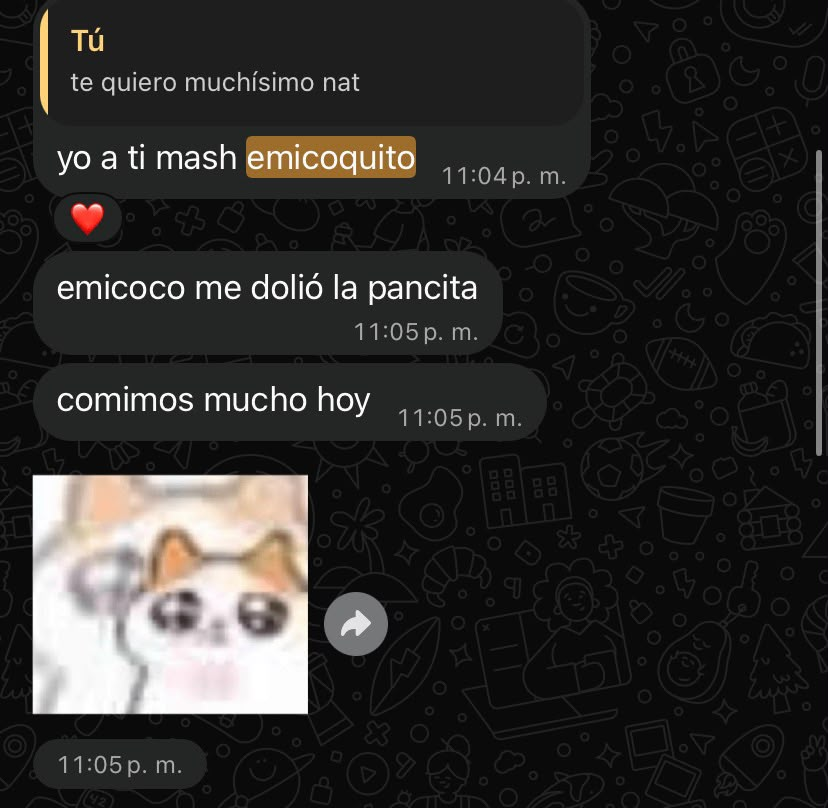
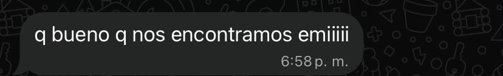
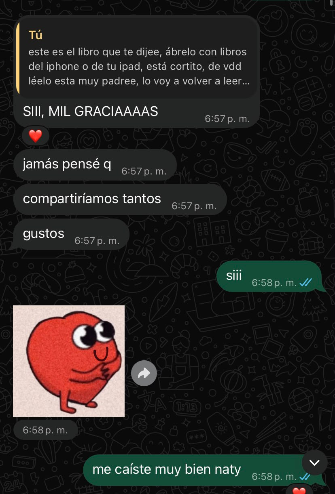
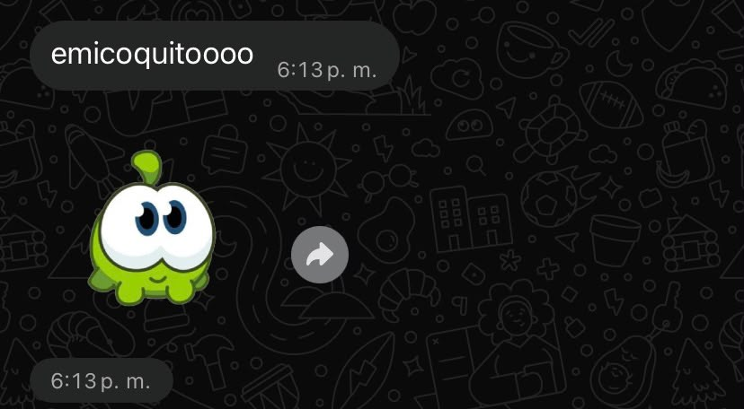

hoy cumplimos siete meses juntos, siete meses desde que comenzó oficialmente la historia más bonita que he tenido la suerte de vivir, y hoy ya tenía una carta preparada para ti, la hice el finde jeje, pero después de lo que hablamos hoy decidí cambiarla, no porque lo que había escrito antes fuera menos importante o me valiera keso, fue porque hay algo que quiero decirte y que en este momento considero mucho más importante que cualquier otra cosa, quiero hablar de nosotros, de ti, de mí y de lo muchísimo que te amo.




hoy me dijiste algo que se quedó dando vueltas en mi cabeza, lo vine pensando todo el camino, me hiciste saber que últimamente no te has sentido tan amada como antes, que sientes que ya no me emociono de la misma manera, que ya no intento conquistarte, que he dejado de hacer algunas de esas pequeñas cosas que antes te hacían sentir tan especial, o que simplemente ya me vales keso, y siento muy feo que pienses que es así, porque si hay algo que siempre me importará es tu felicidad y la manera en la que te sientes conmigo.
quiero empezar diciéndote que nunca tengas que preguntarte si todavía me emociona verte, si todavía me muero de ganas de besarte, si todavía me parece increíble que seas mi novia, si me vuelvo loco por ti, si me derrito por ti, porque la respuesta siempre será sí, mil veces sí, eres la mujer de mi vida, la divinidad hecha persona, la perfección hecha mujer, eres mi novia y yo tu novio, y no sabes lo feliz que me hace poder decir eso, y entiendo que no solo es importante que yo lo sepa, sino que tú lo sientas, porque de nada sirve que yo tenga todo este amor dentro de mí si no logro demostrártelo como te mereces.
y quisiera empezar por el inicio jeje, tal como en los libros, creo que te he hablado muchísimo de este día, pero no tanto de cómo me sentí.
el 14 de noviembre de 2025.
no sé si aún recuerdes con claridad ese día, pero yo lo recuerdo como si hubiera sido ayer, podría volver a vivirlo en mi mente y ciertamente es algo que hago siempre, porque es uno de esos recuerdos que quisiera conservar para toda la vida.
ese día me quedé platicando contigo y, sin darme cuenta, ocurrió algo que cambiaría mi vida para siempre, me di cuenta de que estaba profundamente enamorado de ti, y no hablo de que simplemente me gustaras muchísimo o de que me parecieras la mujer más bonita del mundo, porque eso ya lo sabía, y siempre lo he sabido, hablo de algo muchísimo más grande, algo que ni siquiera sabía que era posible sentir por otra persona.
recuerdo la emoción que tenía, recuerdo cómo volví a mi casa sabiendo que había conectado contigo como con nadie, sintiendo algo que jamás había sentido, una emoción tan bonita que ni siquiera sabía cómo explicar, fuiste como una droga para mí, desde ese día me sentía adicto a ti, a tu voz, a tus mensajes, a tu risa, a tu forma de ser, a absolutamente todo lo que tuviera que ver contigo.
fue raro darme cuenta de que me había perdido completamente en ti, en tus ojos, en tu sonrisa, en tu forma de hablar, en tu manera de reírte, en cada pequeño detalle que definía a Natalia Bailón, porque de pronto había una persona que ocupaba mis pensamientos de una manera que nunca antes había experimentado, y lo más bonito es que no quería dejar de pensar en ella.
todavía recuerdo cómo se sentía recibir un mensaje tuyo, cómo me emocionaba ver tu nombre en mi pantalla, cómo sonreía leyendo las cosas que me decías, cómo un simple «emicoco» podía hacerme tan feliz, y no sabes la ternura que me da volver a leer nuestros mensajes del principio, pensar en esas dos personitas que se estaban enamorando sin saber todo lo que les esperaba.
senti y siento que ya no podía imaginar un solo día sin tu voz, sin tu figura, sin tu risa, sin saber de ti, y lo más bonito es que todos los días lo sigo sintiendo, porque desde aquel noviembre no ha existido un solo momento en el que haya dejado de querer tenerte en mi vida.
había encontrado una conexión tan bonita, tan intensa y tan especial que me parecía imposible dejarla pasar, y ese día entendí algo, no quería que fueras solamente una persona más en mi vida, quería, y quiero siempre, que fueras la persona con la que pudiera compartirla.
no sabía exactamente qué nos esperaba, siempre he pensado que el futuro es incierto, no sabía cuántas cosas íbamos a vivir, cuántas veces nos íbamos a reír a carcajadas porque tenemos autismo xdxdxd, cuántos abrazos nos daríamos, cuántos besos nos robaríamos ni cuántos recuerdos terminaríamos construyendo, tampoco sabía todo lo que aprenderíamos juntos, todas las cosas que descubriríamos del otro ni lo increíblemente cercanos que llegaríamos a ser.
pero sí sabía algo.
quería que fueras tú.
y, casi un año después, sigo queriendo exactamente lo mismo.
a veces pienso en el niño que estaba tan emocionado por hablar contigo, que buscaba cualquier oportunidad para acercarse a ti, que sonreía al recibir uno de tus mensajes, que encontraba cualquier excusa para demostrarte lo mucho que le gustabas, y es muy bonito pensar que sigue siendo así, porque ese niño sigo siendo yo, sigo siendo tu emicoco, el mismo que se enamoró perdidamente de ti en noviembre y todos los días
y creo que también hay algo muy bonito que a veces olvidamos cuando pensamos en cómo éramos antes, porque nuestro amor no se ha quedado detenido en esos primeros días, hemos crecido muchísimo juntos.
ahora tenemos muchísima confianza, complicidad, una cercanía que jamás había imaginado y una manera tan de nosotros de ser nosotros, de ser los más chistosos siempre 😎, de entender nuestras bromas, de reírnos de absolutamente cualquier cosa, de poder ser nosotros mismos sin miedo a nada, nos conocemos de una manera tan íntima y tan bonita que a veces me parece increíble pensar que hace un año éramos dos personas que apenas estaban comenzando a conocerse.
hemos conocido versiones de nosotros que ni siquiera sabíamos que existían, hemos construido nuestra propia manera de amarnos, de acompañarnos y de estar juntos, y eso es algo que valoro muchísimo.
porque me enamoré profundamente de la mujer que conocí hace un año, pero estoy todavía más enamorado de la novia que conozco hoy.
y eso es algo que quiero que tengas muy presente, mi vida, porque aunque nuestro amor haya crecido y cambiado con el tiempo, eso jamás ha significado que haya dejado de emocionarme por ti.
nunca pienses te tengo asegurada y como eres mi novia no debí esforzarme
jamás he pensado en ti de esa manera.
tú no eres alguien a quien conquisté y después dejé de intentar enamorar.
eres la persona a la que quiero seguir conquistando todos los días de mi vida, como te he dicho desde el principio, quiero enamorarte cada día de mi vida, hasta que ya no esté aquí, y cuando lleguemos a estar viejitos, quiero seguir buscando maneras de hacerte sonreír como lo hacía aquel emi coquito que apenas estaba empezando a conocerte.
y no quiero que esta carta sean solo promesas bonitas que se queden guardadas quiero que sea el comienzo de algo que realmente puedas experimentar, que puedas sentir, que puedas recordar y que algún día podamos ver y sonreír
porque lo pensé mucho.
siempre me han encantado esas películas románticas que hemos visto juntos, esas historias en las que el protagonista está tan enamorado que hace cosas que parecen una locura, en las que busca cualquier manera de demostrar su amor, en las que no se rinde JAMÁS, en las que pareciera que todo el universo se acomoda para que dos personas puedan estar juntas.
y es que yo siempre siento que estoy viviendo una de esas películas contigo, pero muchísimo más cute, porque en las películas uno ve a dos personas enamorarse y sueña con tener algo así, pero yo no tengo que soñarlo, yo tengo a la mujer de mis sueños conmigo.
y si en esas películas el macho hace hasta lo imposible para enamorar a la mujer que ama, pues tengo que seguir el ejemplo.
porque además, qué clase de protagonista sería si después de conseguir estar con el amor de su vida dejara de intentar enamorarla????
así que quiero conquistarte de nuevo, y no porque ya no me ames o porque quiera que nuestra historia comience desde cero, sino porque tengo que cumplir mi promesa, porque quiero seguir haciendo lo que siempre he querido hacer, enamorarte todos los días, de todas las maneras posibles, durante toda nuestra vida.
y quiero comenzar esta misma semana.
porque noviembre no es un mes cualquiera para nosotros.
fue en noviembre cuando comenzamos a conocernos de una manera diferente, cuando nuestras conversaciones empezaron a significar algo más, cuando comenzamos a emocionarnos por el otro, cuando sin saberlo estábamos escribiendo las primeras experiencias de nuestra larguísima relación.
y dentro de muy poquitos días se cumplirá un año de aquel 14 de noviembre en el que comprendí que estaba enamorado de ti.
qué bonito sería que este noviembre, un año después, pudiera hacerte sentir una vez más toda esa emoción con la que comenzó lo nuestro, que pudieras volver a emocionarte con mis mensajitos, con mis detalles, con mis cartas, con mis canciones, con las pequeñas cosas que hice para conquistarte.
aunque esta vez hay una diferencia.
hace un año no sabía si me ibas a amar, no sabía cómo iba a ser lo nuestro, no sabía si algún día podría llamarte mi novia, solamente sabía que estaba perdidamente enamorado de Natalia Bailón y que quería hacer todo lo posible para estar con ella.
hoy quiero enamorar, una y otra vez, a la mujer con la que sueño casarme, y como te dije hoy, con la que me voy a casar.
porque después de todo lo que hemos vivido, estoy más seguro que nunca de que quiero construir mi futuro a tu lado.
quiero seguir conociéndote, seguir creciendo contigo, seguir riéndonos de nuestras autistadas, seguir teniendo esas conversaciones que solamente nosotros entendemos, seguir descubriendo nuevas cosas de ti, seguir escuchando tus historias, seguir aprendiendo de ti y seguir enamorándome de cada una de las versiones de Natalia que me toque conocer a lo largo de nuestra vida.
quiero vivir muchísimos noviembres contigo, muchos november rains, quiero que noviembre siempre sea nuestro mes, ese mes en el que podamos recordar cómo comenzó todo, cómo dos personitas que apenas se conocían terminaron convirtiéndose en algo tan bonito.
quiero que algún día podamos mirar atrás y recordar cómo dos desconocidos que comenzaron a hablarse terminaron construyendo una vida entera juntos.
imagínate eso, mi vida, nosotros dentro de muchísimos años, recordando aquellos primeros mensajes, nuestros apodos, nuestras primeras conversaciones, nuestra primera cita, nuestros primeros besos, y pensar que todo eso fue el inicio de una vida entera de recuerdos.
y también quiero aprender a amarte cada vez mejor.
porque amar a alguien no significa hacer todo perfectamente, significa escuchar, comprender, reconocer cuando algo puede mejorar y tener las ganas de hacerlo, porque al final el amor no solamente está en todas esas palabras bonitas que podemos decirnos, sino también en las cosas que hacemos para demostrarlo.
y yo tengo todas esas ganas contigo.
no quiero volver a ser exactamente el mismo de hace un año, porque ese emicoco todavía no sabía todo lo que hoy sé de ti, ni había vivido la mitad de las cosas maravillosas que hemos compartido, y aunque me encanta recordar cómo éramos antes, también me encanta pensar en cuánto hemos crecido.
quiero ser alguien todavía mejor para ti.
quiero conservar toda esa ilusión del principio, pero acompañarla con el amor, la confianza, la complicidad y la seguridad que hemos construido durante este tiempo.
quiero que tengas las dos cosas, la emoción de sentirte conquistada y la tranquilidad de sentirte profundamente amada.
quiero que sigas teniendo maripositas cuando te dedique una canción, pero también quiero que sientas esa paz tan bonita de saber que tienes a alguien que te ama, te escucha, te cuida y quiere estar contigo siempre.
y quiero decirte algo más.
si alguna vez no correspondo uno de tus abrazos de la manera en que esperabas, si alguna vez soy menos expresivo o si hay algún momento en el que no demuestro todo lo que siento, nunca quiero que eso te haga pensar que me estás dejando de gustar, porque jamás será así.
me sigues encantando.
me sigue pareciendo increíble tu sonrisa, me sigue emocionando verte, me siguen fascinando tus besos y me sigue haciendo feliz saber que eres tú quien camina a mi lado, me sigues derritiendo, me sigues volviendo loco, me sigues pareciendo la mujer más hermosa que mis ojos han tenido la suerte de ver.
y aunque a veces haya momentos en los que no exprese todo eso como debería, quiero aprender a hacerlo mejor, porque no quiero que tengas que adivinar cuánto te amo.
quiero que puedas sentirlo.
quiero que cuando te abrace sientas que no existe ningún otro lugar en el mundo en el que quisiera estar, que cuando te bese sepas que sigo teniendo las mismas ganas de besarte que cuando apenas comenzábamos, que cuando te mire puedas reconocer a emicoco que se enamoró profundamente de ti hace casi un año.
y voy a esforzarme para que esas cosas no solamente estén dentro de mi corazón, sino que también las puedas ver en mis acciones.
porque mereces sentirte amada, no solamente escuchar que lo eres.
y porque, si hay algo que siempre te he demostrado, es que cuando algo me importa de verdad, no me rindo fácilmente.
y tú, mi amor, eres muchísimo más que algo que me importa.
eres mi persona favorita, mi compañera, mi mejor amiga, mi amor, mi niña preciosa, mi eneve, la mujer de mi vida y uno de los sueños más bonitos que se me han cumplido.
no quiero que pienses que estoy haciendo esto solamente porque hoy me dijiste cómo te sentías, lo hago porque me importa escucharte, porque quiero cuidar lo nuestro, porque quiero que nuestra relación sea cada vez más bonita y porque todavía tengo muchísimas maneras de demostrarte cuánto te amo.
gracias por decírmelo y por tener la confianza de hablarlo conmigo, gracias por confiar en mí lo suficiente como para contarme lo que te estaba doliendo, incluso si no era algo fácil de decir.
quiero que siempre podamos hablar así, quiero que siempre tengas la confianza de decirme cuando algo te hace sentir mal, porque te amo tanto que jamás quisiera que te quedaras guardando algo que pudiéramos solucionar juntos.
y te prometo que voy a hacer mi parte para que las cosas cambien, para bien, no porque nuestro amor esté desapareciendo, sino porque quiero que nunca dejemos de cuidarlo.
y hay algo que quisiera que recordaras siempre.
el emicoco que se enamoró de ti aquel 14 de noviembre sigue aquí.
sigue siendo el mismo niño que se emocionaba con tus mensajes, el que se derretía cuando le hablabas bonito, el que quería pasar todo el tiempo posible contigo, el que sentía que había encontrado a alguien completamente diferente a todas las demás personas.
y si pudiera regresar a ese día, si pudiera encontrarme con aquel emicoco que volvía a su casa sintiendo que acababa de conocer al amor de su vida, me encantaría poder decirle todo lo que nos esperaba.
le diría que sí, que esa nub que tanto le gusta se convertirá en su novia, que podrán abrazarse, besarse, reírse juntos de las cosas más tontas del universo, que van a construir una confianza preciosa y que algún día estará escribiéndole una carta por sus siete meses juntos.
y estoy seguro de que sería el pro más feliz del mundo.
quiero que puedas mirar nuestro presente y sentirte todavía más amada que en aquellos primeros días.
y aunque hoy cumplimos siete meses, siento que nuestra historia lleva muchísimo más tiempo escribiéndose, porque antes de ser tu novio ya era quien se moría de ganas de estar contigo, ese emicoco que se emocionaba cuando le decías cosas bonitas, cuando le ponías apodos, cuando le demostrabas que quizá también estaba comenzando a gustarte.
y pensar que todo comenzó con algo tan sencillo como un mensaje, con esas conversaciones que poco a poco se fueron convirtiendo en lo más bonito de mis días.
a veces quisiera volver a vivir esos momentos, no para cambiar nada, sino simplemente para volver a sentir por primera vez esa emoción tan inmensa de estar conociéndote.
pero entonces me doy cuenta de algo muchísimo más bonito.
no necesito regresar al pasado para volver a sentir todo eso, porque la persona que me hacía sentir así sigue estando frente a mí.
sigues siendo tú.
la niña por la que me emocionaba tanto, la que me hacía sonreír mirando una pantalla, la que convirtió un noviembre cualquiera en uno de los meses más importantes de mi vida.
solamente que ahora tengo la fortuna de poder llamarte mi novia y que siento todos los días
y no sabes cuánto te amo por eso.
no quiero que esta sea solamente una carta de aniversario, quiero que sea también una forma de recordarte que lo nuestro es una historia que todavía estamos escribiendo, y que yo quiero seguir llenándola de momentos bonitos, de detalles, de canciones, de cartas, de flores, de risas, de besos, de abrazos y de absolutamente todas esas pequeñas cosas que hacen que nuestro amor sea tan especial.
quiero seguir conquistándote cuando cumplamos ocho meses, cuando cumplamos un año, cuando llevemos cinco años juntos, cuando llevemos veinte, cuando estemos casados, cuando seamos viejitos y sigamos riéndonos de nuestras tonterías.
porque nunca quiero dejar de tener ganas de enamorarte.
no quiero que vuelvas a enamorarte de mí porque hayas dejado de hacerlo, quiero que nunca dejes de encontrar nuevas razones para seguir enamorándote.
y te prometo que voy a esforzarme para darte esas razones.
feliz siete meses, mi vida, gracias por ser la mujer más maravillosa que he conocido, gracias por aquellos primeros mensajes, por aquella noche de noviembre, por todos nuestros recuerdos, por cada risa, por cada abrazo y por hacerme sentir que encontré a la persona con la que quiero compartir el resto de mi vida.
te amo con todo mi corazón.
te amaba cuando apenas soñaba con poder besarte.
te amo ahora que tengo la fortuna de hacerlo.
y quiero seguir amándote y conquistándote cuando llevemos toda una vida juntos.
porque hace casi un año me di cuenta de que quería que fueras tú.
y hoy, después de conocerte muchísimo más, después de vivir tantas cosas contigo y después de enamorarme todavía más de ti, sigo eligiéndote a ti.
siempre a ti, mi amor.
porque aquella noche de noviembre me enamoré de ti, pero desde entonces no ha pasado un solo día en el que haya dejado de hacerlo.
te amo muchísimo, mi eneve preciosa.
con todo el amor del mundo, emicici. ♡
notita: adivina la canción de la carta de hoy jeje, y por cierto, estás escuchando todas las canciones que yo escuché mientras escribía esto, me gustaría muchísimo y me daría mucha ilusión que las escucharas todas, porque cada una me acompañó mientras pensaba en ti y recordaba nuestra historia.